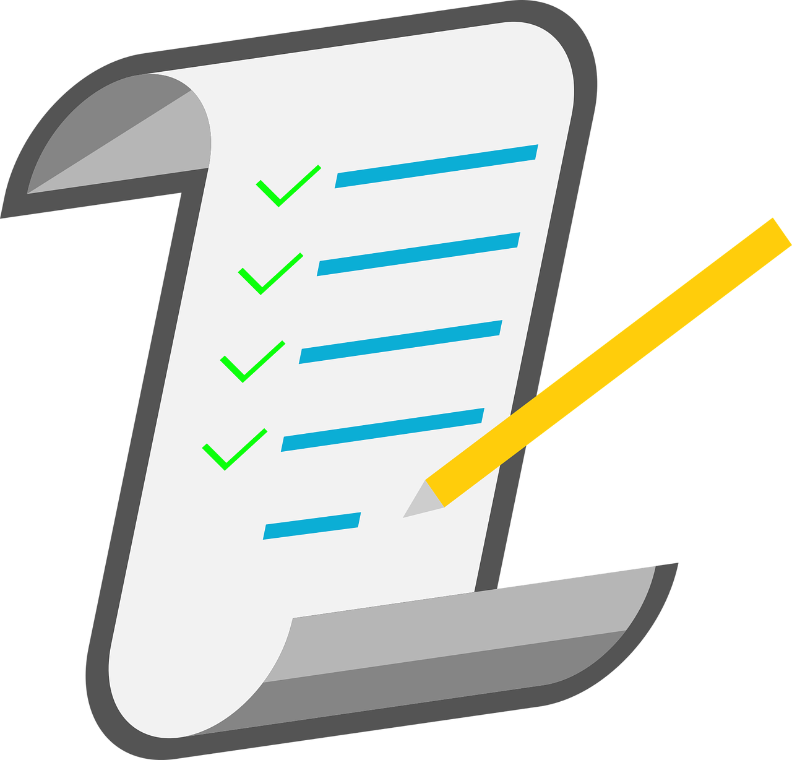

|
Crie uma planilha de gastos: O primeiro passo para começar a economizar é saber exatamente para onde o seu dinheiro vai. Por isso, é fundamental manter uma planilha (de excel ou online) com todos os seus gastos. Através dela, é possível identificar pequenas despesas que podem ser eliminadas, fazendo uma grande economia ao longo ano. Organize o orçamento mensal, definindo o máximo que você pode gastar e quanto quer economizar. |
 |
Negocie as tarifas bancárias: Verifique no extrato quanto seu banco cobra de tarifas mensais e negocie com o seu gerente a isenção delas. Se não existe a necessidade de realizar muitas movimentações em sua conta, mude para uma Conta de Serviços Essenciais. Nesta modalidade, os bancos são proibidos de cobrar tarifas. Negocie também a anuidade do seu cartão de crédito. Se a operadora se mostrar irredutível, ameace mudar para a concorrente. Ninguém quer perder um bom cliente. |
 |
Não atrase suas contas: Deixar contas vencerem por um ou dois dias pode não significar muito, afinal são cobrados apenas alguns centavos de multa. Mas ao somar todos esses centavos no fim do ano, você vai perceber que poderia ter economizado uma boa quantia. Fique atento, principalmente com a fatura do cartão de crédito, que tem os maiores juros. Seja pontual com o pagamento! |
|  | Faça uma lista de compras antes de ir ao mercado: Quantas vezes você já foi ao supermercado e voltou com a sensação de que gastou muito e não comprou nada? Isso é um sintoma de quem não sabe o que realmente precisa comprar. Faça uma lista com os itens que estão em falta e atenha-se a ela dentro do mercado. |
Compare o preço por kilo ou por litro: Outra dica para poupar no supermercado é comparar o preço dos produtos por quilo ou litro, ao invés de apenas comparar marcas. Muitas vezes o consumidor acaba sendo enganado com “promoções especiais”. Fique atento. |
|
Não vá ao mercado com fome: Pode parecer piada, mas isso influencia sim no desejo de compra. Quando a gente está com fome, sente um desejo muito maior por consumir e acaba comprando mais do que deveria. Além disso, a fome é inimiga da sensatez, e provoca uma vontade louca de comprar besteiras, como balas e doces, dispensáveis para quem procura economizar (no bolso e na saúde). |
|
 |
Faça compras apenas em lugares baratos: Evite aquela ida à padaria cara da esquina para comprar coisas que você poderia comprar no mercado pela metade do preço. É só gerenciar bem a quantidade de mantimentos em casa para não ter surpresas de última hora. Aproveite também promoções para fazer um estoque de itens não-perecíveis. |